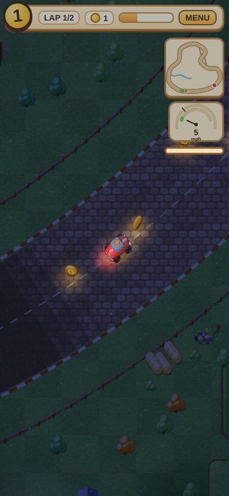
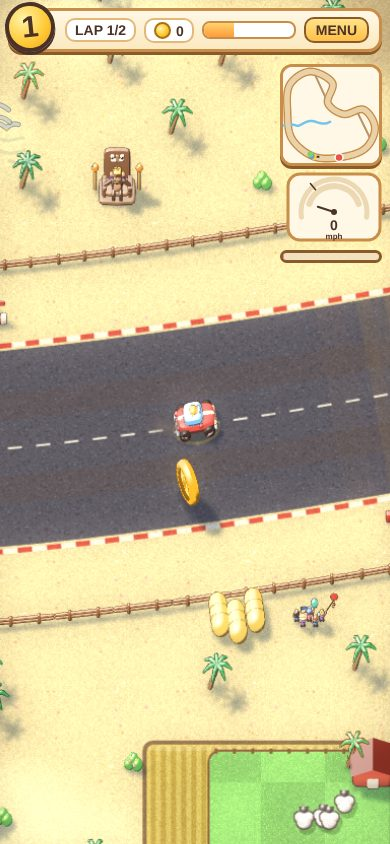
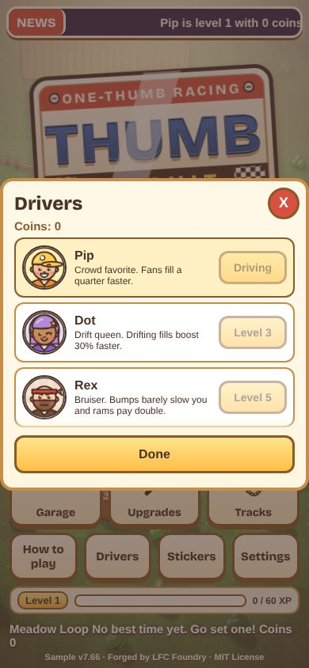
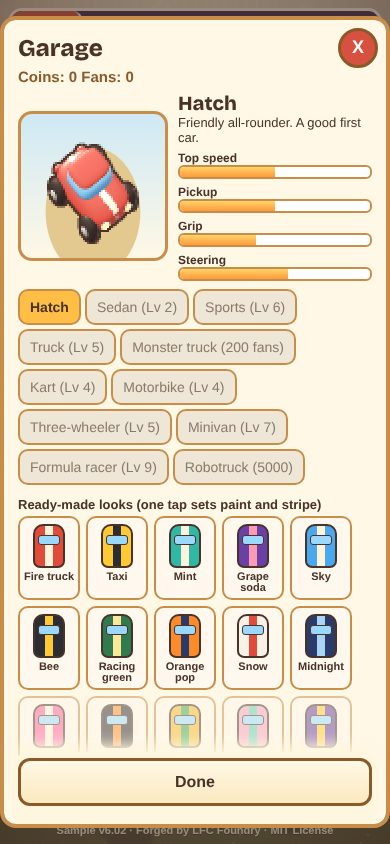
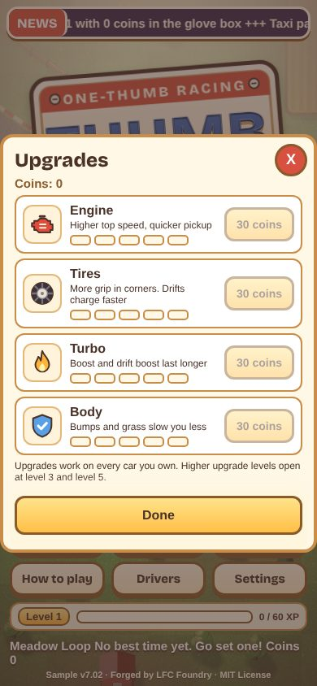

What it is and how it works
A racing game for phones, played in portrait with one thumb, seen from a tilted three-quarter view. The car drives itself forward and your thumb steers. Win races to earn coins, experience and fans, then spend them in the garage on upgrades, new cars, paint and drivers. It is one offline HTML file with browser saves.
Steer with a slide
Hold your thumb on the screen and slide to steer. The road gives a little help with direction, but it never pulls you to the middle of the lane.
Race for rewards
Finish races for prize money and experience. Levels from 1 to 10 unlock new cars, drivers and tracks.
Tune your car
Upgrade the engine, tires, turbo and body in five levels each, then change the paint and stripes.
Why it exists
A rewarding, incremental racing loop you can play with one thumb, in the same cozy, single-file spirit as the other LFC Foundry games.
- A quick race while you wait in line or ride the bus, played one-handed.
- A simple game for kids or grown-ups with no ads, no sign-in and nothing to buy.
- An example of a game built as one offline file, with no install.
- Something to read, change or fork: the code is open source under the MIT license.
Highlights
What the sample has today.
Road to the Big Top
A campaign of six towns. Each has three races and a duel, and 72 stars to earn. Duel wins earn vehicles.
Track thrills
Jump ramps, speed pads, oil slicks and puddles. Rivals use them too, and sometimes suffer for it.
Close racing
Sit right behind a rival for a slipstream boost. A close-call bonus, a final-lap hunter and a slow-motion photo finish keep the last laps tense.
Bigger crashes
Ram a rival and cones and tire stacks fly, and cars can flip.
Rocket start
Tap Boost right at the green light for a head start. Tap too early and you lose it.
Garage and drivers
Buy cars, pick paint and stripe colors, and recruit drivers with faces and perks.
Eight tracks
Meadow, orchard, beach, candy, ice, autumn woods, a figure eight that crosses itself on a bridge, and Big Top Loop, a circus track with a loop-de-loop that cars ride through.
3D look with a fallback
Live 3D cars and headlights at dusk, drawn with WebGL2 when your browser has it, and a Canvas picture when it does not.
Fan milestones
New car looks unlock as your fans grow. A monster truck is earned free at 200 lifetime fans and is not for sale.
Trackside life
People with legs and faces, fan groups with flags, balloons and kites, a chimp on a tiki throne, and a submarine on the lake.
Changing road surfaces
Packed dirt, asphalt, cobblestone and concrete by section, with tire and burn marks. One track has a speed bump.
Rivals that keep it close
Easy, Normal and Hard settings. On Easy and Normal, rivals push a little when you are far ahead. Hard adds wet, icy and sticky road.
Secrets and unlockables
Odd vehicles to earn and a few surprises to find. No spoilers here.
Underdog Rocket
When you are behind, a pink bar above Boost fills faster. When it is full, double-tap Boost for a short rocket burst.
Under the bridge
Cars drive under the bridge as outlines, with shadows on the deck, and coins sit on the bridge too.
Keyboard too
On a computer, the arrow keys steer and the space bar is Boost.
Promises
What the sample does today, checked against the build.
No ads
Not one, anywhere in the game.
No accounts
Nothing to sign up for or log in to.
No data sent anywhere
The page makes no network requests. Progress stays in your own browser.
No purchases
Coins and cars are earned in the game. Nothing is sold for real money.
Works offline
One self-contained file. Once it has loaded, you can play with no connection.
Single player
Just you against the computer rivals.
Fully open source
MIT licensed, with every line on GitHub for anyone to read, copy or change.
No sound
The game is silent by design. Phones may give a short buzz at some moments.
A look inside





Screenshots of the sample build v6.02, taken in headless Chromium. Newer builds are not in these pictures.
Docs and changelog
Short quick-start first, then the details.